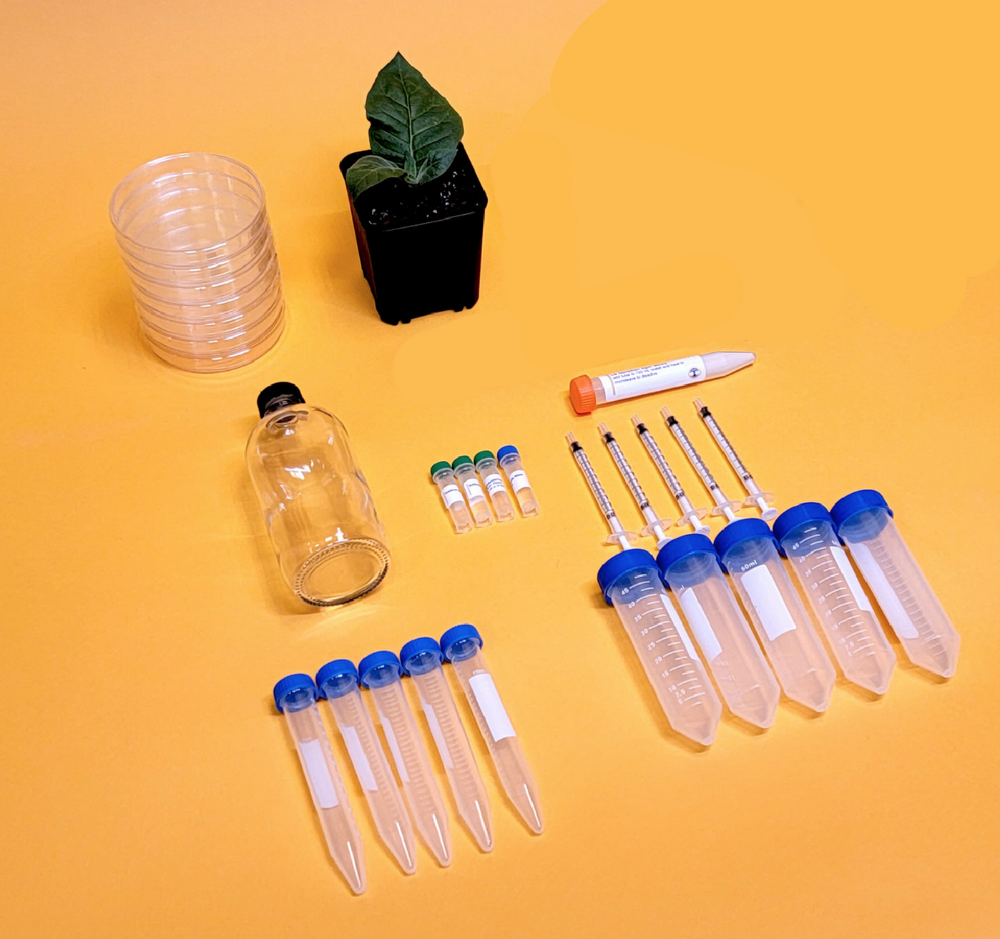
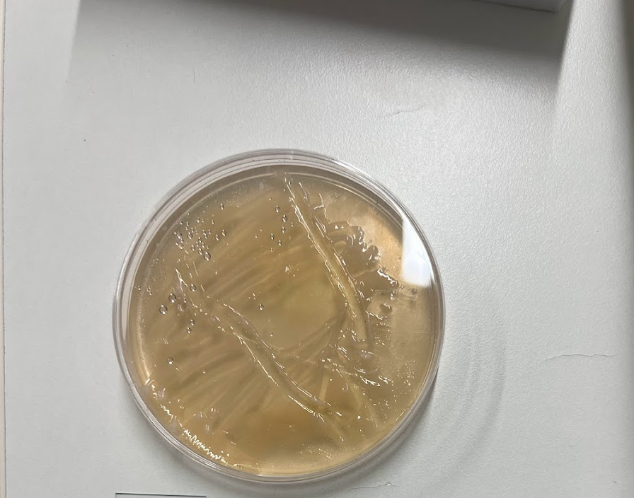
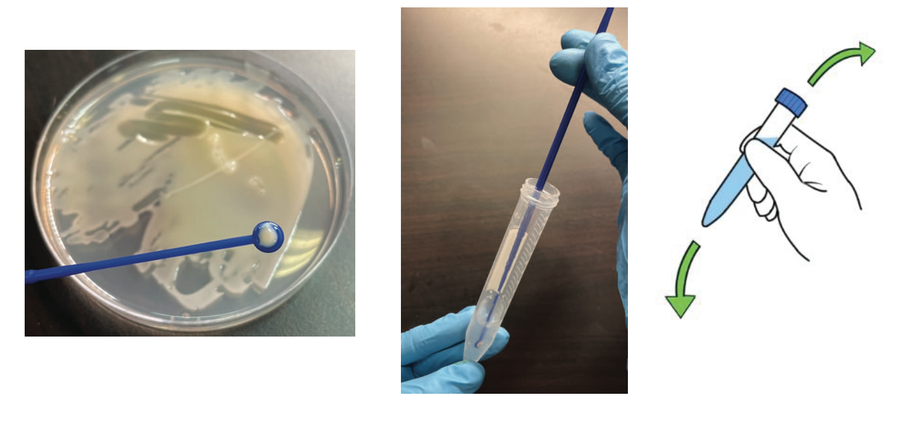
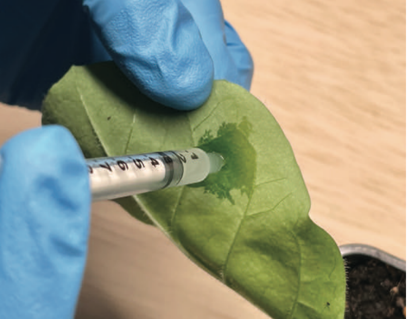
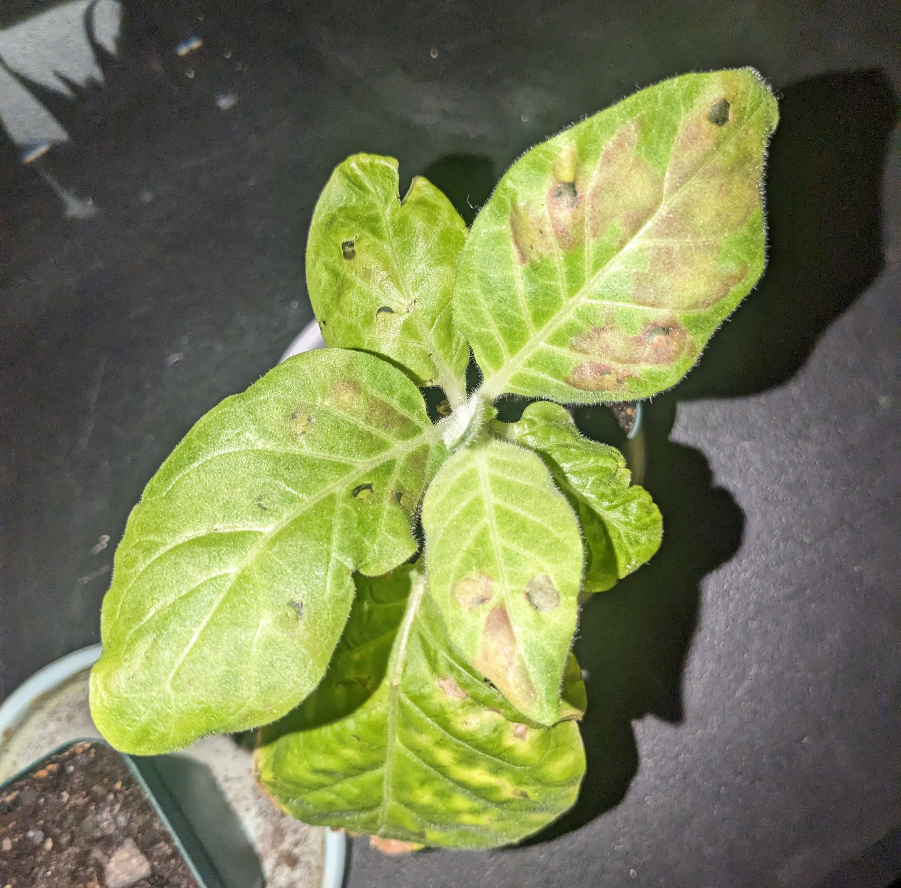

Executive Summary
The purpose of this report is to document my efforts of injecting DNA into tobacco plants. Injecting plants, specifically genetically modifying them through the process of genetic engineering, holds various possibilities and potential applications such as enhanced crop traits, improved nutritional content, environmental adaptation, pharmaceutical production, biofuel production, and aesthetic modifications.
Project Overview
This experiment was carried out in order to learn about genetic modification of plants in order to grow more favorable crops. Cultivating genes through growing flavors in an agar gel and then injecting leaves with solution through agroinfiltration will be incredibly useful in changing the flavor profile of plants while still receiving the nutrients of that plant. When the plants show red spots then it will signify that the experiment worked.
Project Analysis
Contributing problems to plant growth are diseases,pests,and low yield. Elements from other genes can be added to the plants in order to enhance them like vanilla compounds or other flavors. By altering the DNA of the plant we will be able to grow and selective breed for the best kind and maximize the yield of good,healthy crops.
Methods
Prepare the Agrobacterium culture: Agrobacterium tumefaciens is a common bacterium used in agroinfiltration. It carries a plasmid (a small DNA molecule) containing the gene of interest, in this case, the gene responsible for the production of vanilla flavor compounds. The bacteria are grown in agar gel.
Materials needed: Vanilla agrobacterium, pipettes, a needle-less syringe, clean healthy tobacco plant, 50mL plastic vials and 15 mL vials, agar gel with bacterium,and an inoculating loop. Injecting vanilla into tobacco leaves would involve a process known as agroinfiltration or leaf infiltration.
Prepare the tobacco leaves: Healthy tobacco leaves are selected for infiltration. They should be young and free from damage or disease.The Agrobacterium culture is collected by growing in an agar gel for 16-18 hrs
Infiltration procedure: Fill a 50mL tube with tap water. Then, pipette 1mL of media into 50 mL tube of tapwater. Then take a syringe and take 4mL of solution into a 15 mL clean and empty tube. Put the rest of the solution in the fridge. Then gently scrape bacteria off the agar gel with inoculating loop. Gently mix in the solution and make sure there are no clumps.
Take 0.5mL in agrobacterium solution using a needle-less syringe. Inject the solution into the leaf tissue through stomata or by creating small wounds on the under-side of the leaf surface avoiding any veins. This is called agroinfiltration.
Incubation and growth: After infiltration, the tobacco plants are typically kept under controlled conditions, such as a growth chamber or greenhouse, for 2-7 days to allow the Agrobacterium to transfer the desired gene into the plant cells and for the production of vanilla flavor compounds.

The introduction of vanilla genes into tobacco leaves may have regulatory and ethical considerations that need to be taken into account.
Results
Notice how the solution has spread out into the stomata! Plants should grow with red spots on them which will show that the agrinfiltration was succesful. Here is my peer's tobacco plant.
My tobacco plant unfortunately did not survive. It is possible that the plant was not healthy enough to withstand any light bruising. The temp in my room was also too high so it may have contributed to it.
Challenges
The experiment is easy to replicate if the solution is correctly injected into the stomata of the leaves. My plants did not survive possibly from the room temp, plant health, or maybe the infiltration was done incorrectly.
The experiment brings up questions on the ethics of this practice. Environmental Impact: One ethical concern is the potential impact of genetically modified organisms (GMOs) on the environment. There may be concerns about unintended effects on ecosystems, such as the unintended disruption of other organisms in the environment. Health and Safety: The safety of genetically modified plants for human consumption is another ethical consideration. Extensive testing and rigorous regulatory frameworks are typically in place to ensure the safety of genetically modified crops before they are approved for commercial use.
Solutions
If my room was more temperature controlled and my plant was healthy perhaps it would have been successful.
Public Perception and Transparency: Ethical considerations also include public perception and transparency regarding the use of genetic modification techniques. Public engagement, education, and open dialogue about the benefits, risks, and ethical implications of these technologies are important to ensure informed decision-making and public trust.
Conclusions
What have we learned?
DNA analysis can be used for studying the genetic diversity of a plant and selectively breeding for the desired outcomes. For example we can study the genes responsible for flavor, aroma, and other quality attributes in strawberries. By identifying the genetic factors that contribute to desirable taste and sensory characteristics, breeders can select parent strawberry plants with the desired traits to develop new varieties with enhanced flavor and overall fruit quality.